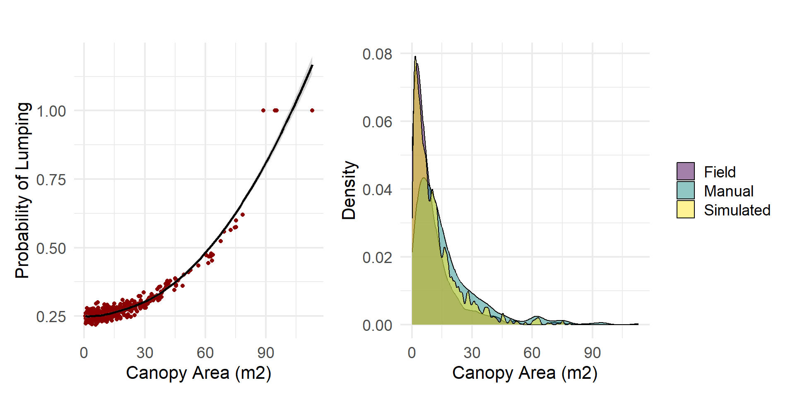

Biomass Report
Update 8/14/2025
Overview
This report presents additional exploration of biomass estimates derived from canopy area measurements, with a focus on
Refining the parameterization of the canopy segmentation algorithm.
Characterizing errors associated with that algorithm.
Canopy Area Allometric Model
We modeled a simple allometric relationship between canopy area and aboveground biomass by extending the previously established relationship between diameter at root crown and biomass for mesquite trees. Model parameters were derived from observations at the site’s biometric gradient. The model is non-linear, causing larger tree canopies to disproportionately impact the total site biomass compared to smaller canopies. Biomass estimates throughout the remainder of this update are predicted from this model.
Latin Hypercube Sampling
Latin hypercube sampling (LHS) is a stratified sampling technique that efficiently explores multiple parameter combinations by evenly representing each parameter range across the set of samples. We used LHS to evaluate 3,000 combinations of eight parameters used in the tree detection/canopy segmentation algorithms. For each parameter combination, we fit a lognormal distribution to the automatically delineated canopy areas and calculated the log-likelihood of the manually measured canopy areas. We also calculated the median canopy area difference, Kolmogorov-Smirnov (KS) statistic, and tree count difference to assess performance.
We filtered the parameter sets and only kept those meeting the following criteria (in a comparison of the manual and auto delineated canopies):
median canopy area difference < 5 m2
tree count difference < 50
canopy area distribution overlap > 84%
KS test D value < 0.3 (p value < 0.05)
Then, we chose the 300 parameter sets with the highest log likelihood values to characterize the variability in modeled canopy area, tree count, and canopy cover.

We compared three metrics derived from delineated canopies and from field observations. Manual delineations overpredicted biomass by 64%, overpredicted canopy cover by 21%, and underpredicted tree count by 30% relative to field observations. The automated model performed similarly, overpredicting biomass by 40%, overpredicting canopy cover by 20%, and underpredicting tree count by 35%. The automated and manually delineated estimates aligned closely, but deviated noticeably from field totals.
| Comparison of Canopy Metrics Across Methods | |||
| Metric | Method | Median | IQR (25–75%) |
|---|---|---|---|
| Canopy Cover (%) | Manual_Detection | 24.03 | NA |
| Number of Trees | Manual_Detection | 442.00 | NA |
| Total Biomass (Mg/ha) | Manual_Detection | 5.94 | NA |
| Canopy Cover (%) | Field_Observations | 19.88 | NA |
| Number of Trees | Field_Observations | 634.00 | NA |
| Total Biomass (Mg/ha) | Field_Observations | 3.62 | NA |
| Canopy Cover (%) | Auto_Detection | 23.87 | 21.86–25.18 |
| Total Biomass (Mg/ha) | Auto_Detection | 5.06 | 4.17–5.7 |
| Number of Trees | Auto_Detection | 413.00 | 403–425 |
We also selected the parameter set with the highest log-likelihood value from the top 300 parameter sets to characterize canopies at the site and to compare results to the manual delineations and field observations. This set of parameters slightly underestimates larger canopies (blue), but detects more clumps of smaller canopies.

We compare distributions of canopy area and height for the field observations, manually delineated canopies, and automatically delineated canopies (using the top parameter set). Field observations contained a higher proportion of small canopy areas compared to the delineated canopy datasets. Additionally, the height distribution from the observed data was more uniform, exhibiting a more gradual incline compared to the steeper distribution observed in the delineated canopies.
Canopy Errors
Due to the substantial differences in trees detected, biomass, and canopy area between the observed and delineated canopies, we investigated sources of error. We attribute the under-performance of the canopy delineations to two types of error:
Detection error: inaccuracies in identifying the presence or absence of a tree.
Segmentation error: inaccuracies in defining individual canopy boundaries, such as merging multiple canopies into one or fragmenting a single canopy into several parts.
Detection errors primarily affect small trees, since large trees naturally occupy more area and have denser canopies, making them more likely to be detected. Because small trees are abundant at the site, a model’s ability to detect canopies below a certain size threshold can cause substantial variability in the total number of individuals recorded. However, while small-canopied trees contribute largely to tree counts, their contribution to total biomass is minimal until a considerable number of these canopies are left undetected.

Given the large discrepancy in tree counts between the delineations and field observations, we investigated the role of errors associated with segmentation. We randomly split manually delineated canopies one to four times to match the total number of observed canopies and examined the resulting distribution. Larger trees had a higher probability of being composed of multiple merged canopies. Because the allometric relationship between canopy area and biomass is nonlinear, the accidental merging of multiple canopies produces artificially large canopies that can disproportionately inflate total biomass estimates for the site. Conversely, randomly segmenting canopies to create a distribution more similar to field observations increases tree counts while reducing total biomass.

Although tree presence can be reliably determined in the field, canopy area measurements are more uncertain due to irregular canopy shapes. Standard field practice involves measuring the major and minor axes of the canopy, but these axes can be difficult to accurately and quickly identify from the ground. As a result, measurement error is introduced depending on the angles at which canopy diameters are assessed. Variability in canopy area estimates is associated with both the size and shape of the canopy.
We used the modeled tree canopy polygons and generated major and minor axis diameter measurements for 18 directions within each polygon. As size increases, so does the error of the directional estimate

Likewise, we used these canopy polygons to assess the error associated with canopies of irregular shapes (i.e., deviation from a smooth ellipse). As the canopy shape deviates from an ellipse, irregularity increases, and error increases.

Update 8/1/2025
Overview
Recent field surveys and drone flights at the US-SRG flux site enabled an exploration of woody biomass estimation methods at fine and coarse spatial scales. In this report, we estimated woody biomass using three approaches:
- Allometric equations based on field-measured basal diameter
- Allometric equations applied to canopy metrics
- Voxel-based calculations using high-density LiDAR
In addition to estimating total biomass at the site, we apply these methods to estimate biomass along the biometric mesquite gradient at US-SRG. Finally, we examined trends in biomass products available at the site.
Allometry with Basal Diameter
At the end of May 2025, we conducted a woody plant census within a 100-meter radius of the US-SRG flux tower. During this survey, we recorded basal and canopy diameter for all individual shrubs and trees. To estimate aboveground biomass, we applied an allometric equation originally described by Jenkins et al. (2003) and later revised by Chojnacky et al. (2013). Given that the vegetation at US-SRG is dominated by mesquite (Prosopis spp.), we used the equation specific to Woodland Fabaceae/Rosaceae:
Biomass = exp(−2.9255 + 2.4109 × log(x))
where x is diameter at root collar (DRC) in centimeters.
We made two key assumptions in applying this relationship. First, because DRC was not measured directly, we approximated it using basal diameter measurements. Second, although the equation is primarily based on mesquite data, we include additional woody desert shrubs: hackberry (Celtis pallida), greythorn (Ziziphus obtusifolia), whitethorn acacia (Vachellia constricta), and catclaw acacia (Senegalia greggii). For multi-stemmed individuals, we used the average basal diameter across stems.
For desert willow (Chilopsis linearis), we applied a separate equation using diameter at breast height (DBH), with parameters as follows:
Biomass = exp(−2.4441 + 2.4561 × log(x))
where x is DBH in centimeters.

The total woody biomass from the census basal diameter observations is 12.66 Mg.
Allometry with Canopy Metrics
In order to estimate biomass from canopy metrics, we modeled an empirical relationship between canopy area and woody biomass using observations from the biometric gradient:
Biomass = 0.1136 * (Canopy Area)^1.8890
Canopy area was derived automatically from a LiDAR-based canopy height model (CHM) using treetop detection and watershed segmentation to delineate individual tree crowns. We then applied the canopy area–biomass relationship to estimate total woody biomass within a 100-meter radius of the US-SRG flux tower for the automatically detected crowns, from manually detected crowns (see DronetoCensusComparison report in FluxandtheField repository), and crown metrics from field observations.
To detect treetops on the CHM, we used a variable window filter, where the window size is a linear function of canopy height (y = ax + b). In the function, we also include a height threshold below which a default window size is applied. To identify optimal parameters for this function, we evaluated over 1,500 combinations of values based on their ability to identify treetops and create a reasonable distribution of canopy areas relative to the manually delineated canopy crowns. More specifically, we evaluated the parameters based on the outputs’:
Deviation in the number of detected crowns compared to manual delineation
Deviation in the median canopy area
Deviation in the distribution of canopy areas
Statistical difference in distribution shape (Kolmogorov–Smirnov test)

The optimal window function based on the parameters tested was:
Window size = 0.6x + 0.3 Window height threshold: < 2.6 m, window size = 4 m
This combination of parameters agreed strongly with the manually delineated canopy area metrics, resulting in a crown count difference of 1, median canopy area difference of 1.45 m2, an overlap score of 0.82, and a Kolmogorov–Smirnov D value of 0.22.
Although this method occasionally overdetects crowns in taller vegetation (left), and the segmented canopy polygons often underestimate crown area even when treetops are correctly located (right), the overall performance is comparable to the manually delineated reference.

To further assess precision, we compared total woody biomass estimates derived from three sources of canopy area measurements:
Automated LiDAR-based segmentation: 11.7 Mg
Manual canopy delineation: 18.0 Mg
Field observations: 3.8 Mg
Voxelization
For the final biomass estimation method, we used voxelized a LiDAR point cloud data a cube size of 2.5 cm. Points were filtered to exclude noise and low-returns associated with grasses. Unlike the segmentation-based method, voxelization allowed us to estimate biomass across the entire area without requiring delineation of individual tree crowns.
We applied a specific wood density of 0.78 g cm-3 (Chojnacky et al., 2013), to convert voxelized volume into woody biomass. Using this method, the total estimated biomass within the survey boundary was 46.9 Mg.
It is important to note, however, that this method is highly sensitive to voxel resolution. For example, increasing the voxel side length to 5 cm resulted in a biomass estimate of 325.6 Mg. Further work is needed to understand the influence of voxel resolution on estimating biomass and what criteria is needed to select a voxel size.
Biometric Gradient Comparison
After evaluating biomass estimation methods at the ecosystem scale, we narrowed our focus to a set of 10 individual trees spanning a wide range of heights, basal diameters, canopy diameters, and growth forms. We refer to these tree as the biometric gradient. For each tree, we estimated aboveground biomass using all available methods described above.
Voxel-based estimates consistently produced higher biomass values compared to other approaches. In contrast, the automated crown detection method tended to output lower biomass estimates. The estimates from basal diameter and canopy diameter were generally similar. This was expected since both rely on the same allometric relationship.
Biomass Products
Direct comparison between the biomass estimates from the methods explored above and existing biomass products is challenging due to the differences in temporal coverage and original spatial resolution. We compare them regardless and observe substantial variability across both fine and large scale approaches.